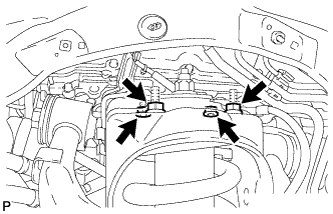
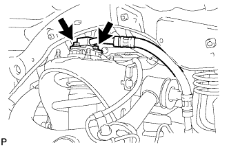
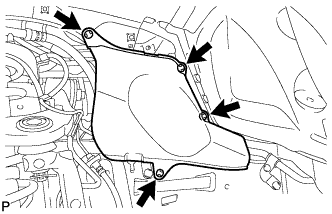
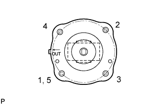

FRONT SHOCK ABSORBER > INSTALLATION |
| 1. TEMPORARILY INSTALL FRONT SHOCK ABSORBER WITH COIL SPRING |
 |
Temporarily install the upper side of the shock absorber to the chassis frame with the 4 nuts.
 |
Temporarily install the lower side of the shock absorber to the lower suspension arm with the bolt and nut.
| 2. CONNECT NO. 2 SUSPENSION CONTROL PRESSURE HOSE (w/ Active Height Control) |
Apply MP grease to the O-ring and back -up ring of the suspension control pressure hose.
 |
Connect the suspension control pressure hose to the shock absorber with the 2 bolts.
| 3. BLEED AIR FROM SUSPENSION FLUID (w/ Active Height Control) |
 |
With the engine stopped, fill the reservoir tank with fluid.
With the vehicle on a level surface, start the engine and set the vehicle height to NORMAL with the suspension control switch.
When the vehicle height becomes NORMAL and the pump stops, stop the engine.
 |
Connect a hose to the bleeder plug of the front left side or right side control valve, then loosen the bleeder plug.
After the fluid containing air stops coming out, retighten the bleeder plug.
 |
Connect a hose to the bleeder plug of the rear left side or right side control valve, then loosen the bleeder plug.
After the fluid containing air stops coming out, retighten the bleeder plug.
Repeat the previous 4 procedures until the fluid containing air stop coming out.
| 4. CHECK FLUID LEVEL IN RESERVOIR (w/ Active Height Control) |
 |
With the vehicle empty, after setting the vehicle height to NORMAL from LO, check the indicator to make sure the vehicle height is NORMAL and check that the fluid level in the reservoir tank is within the specified range (MAX, MIN).
| 5. INSPECT FOR SUSPENSION FLUID LEAK (w/ Active Height Control) |
Check that the union nuts shown in the illustration are tightened to the specified torque.
Check for fluid leakage from the parts and connections.

| 6. CONNECT STEERING KNUCKLE LH |
Connect the steering knuckle to the suspension upper arm.
Install the nut and a new cotter pin.
| 7. CONNECT SKID CONTROL SENSOR WIRE |
 |
Connect the sensor wire to the steering knuckle and upper arm with the bolt and nut.
| 8. INSTALL FRONT FENDER APRON SEAL REAR LH (w/ Active Height Control) |
 |
Install the apron seal with the 4 clips.
| 9. INSTALL FRONT FENDER APRON SEAL LH (w/ Active Height Control) |
 |
Install the apron seal with the 4 clips.
| 10. TEMPORARILY INSTALL FRONT STABILIZER LINK ASSEMBLY RH |
 |
Temporarily install the stabilizer link with the bolt.
Temporarily install the stabilizer link with the nut.
Tighten the nut.
| 11. TEMPORARILY INSTALL FRONT STABILIZER LINK ASSEMBLY LH (w/ KDSS) |
 |
Temporarily install the stabilizer link to the lower arm with the bolt.
 |
Temporarily install the stabilizer link to the stabilizer control arm with the bolt and nut.
| 12. TEMPORARILY INSTALL FRONT STABILIZER LINK ASSEMBLY LH (w/o KDSS) |
 |
Temporarily install the stabilizer link with the nut and bolt.
Tighten the nut.
| 13. TIGHTEN FRONT NO. 1 STABILIZER BRACKET LH |
 |
Tighten the 2 bolts of the front stabilizer brackets.
| 14. TIGHTEN FRONT NO. 1 STABILIZER BRACKET RH |
 |
Tighten the 2 bolts of the front stabilizer brackets.
| 15. INSTALL NO. 1 ENGINE UNDER COVER SUB-ASSEMBLY |
 |
Install the No. 1 engine under cover with the 10 bolts.
| 16. INSTALL FRONT FENDER SPLASH SHIELD SUB-ASSEMBLY LH |
 |
Push in the clip indicated by the arrow in the illustration to install the fender splash shield.
Install the 3 bolts and screw.
| 17. INSTALL FRONT FENDER SPLASH SHIELD SUB-ASSEMBLY RH |
| 18. STABILIZE SUSPENSION |
Install the front wheels.
Lower the vehicle.
Press down on the vehicle several times to stabilize the suspension.
| 19. TIGHTEN FRONT SHOCK ABSORBER WITH COIL SPRING |
|
Tighten the nut.
 |
Tighten the 4 upper nuts in diametrically opposite pairs.
Check that the first nut that was tightened is at the torque specification.
| 20. TIGHTEN FRONT STABILIZER LINK ASSEMBLY LH (w/ KDSS) |
 |
Tighten the bolt.
Tighten the nut.
| 21. TIGHTEN FRONT STABILIZER LINK ASSEMBLY LH (w/o KDSS) |
Tighten the bolt.
| 22. TIGHTEN FRONT STABILIZER LINK ASSEMBLY RH |
 |
Tighten the bolt.
| 23. PERFORM VEHICLE HEIGHT OFFSET CALIBRATION (w/ Active Height Control) |
Perform the vehicle height offset calibration (Click here).
| 24. MEASURE VEHICLE HEIGHT (w/ KDSS) |
Set the tire pressure to the specified value(s) (Click here).
Bounce the vehicle to stabilize the suspension.
 |
Measure the distance from the ground to the top of the bumper and calculate the difference in the vehicle height between left and right. Perform this procedure for both the front and rear wheels.
| 25. CLOSE STABILIZER CONTROL WITH ACCUMULATOR HOUSING SHUTTER VALVE (w/ KDSS) |
Using a 5 mm hexagon socket wrench, tighten the lower and upper chamber shutter valves of the stabilizer control with accumulator housing.
| 26. INSTALL STABILIZER CONTROL VALVE PROTECTOR (w/ KDSS) |
 |
Install the valve protector with the 3 bolts.
Attach the clamp, and connect the connector to the valve protector.